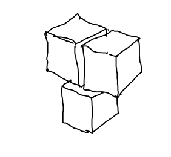

library(torch)
# un vector 1d de tamaño 2
t <- torch_tensor(c(1, 2))
ttorch_tensor
1
2
[ CPUFloatType{2} ]# Ahora un vector 1d, pero del tipo bool
t<-torch_tensor(c(TRUE, FALSE))Jhonatan Zambrano
17 de enero de 2023

Anteriormente se introdujo torch, un paquete de R que provee funcionalidad nativa similar a la que tienen los usuarios de Python por medio de PyTorch. Allí se asumió algún conocimiento de Keras y TensorFlow. Por lo anterior, se “retrató” torch de forma que pudiera ser de ayuda para alguien que haya “crecido” con la forma en que se entrena un modelo en Keras : enfocándose en las diferencias, sin perder de vista el proceso completo.
En esta publicación se cambia de perspectiva. Se programa una red neuronal sencilla “desde el principio” haciendo uso únicamente de uno de los bloques constructivos básicos de torch: tensores. Esta red sera tan de “bajo nivel” como puede es posible. (Para aquellos menos inclinados a las matemáticas, esto puede servir como un repaso sobre que es lo que ocurre realmente detrás de todas las herramientas que han sido convenientemente construidas para nosotros. Pero el propósito real es ilustrar todo lo que se puede hacer únicamente con tensores).
Posteriormente, se publicaran tres documentos que mostrarán progresivamente como se puede ir reduciendo el esfuerzo: notablemente desde el principio, enormemente una vez se hayan terminado. Al finalizar estas publicaciones habrás visto como la derivación automática funciona en torch, como usar módulos (capas, in el idioma de keras) y optimizadores. Para ese entonces, tendrás fuertes bases para ser usadas cuando se aplique torch al desarrollo de tareas del mundo real.
Esta publicación será la mas extensa, dado que hay mucho por aprender acerca de los tensores: como crearlos, como manipular sus contenidos o modificas sus formas, como convertirlos en arreglos de R, matrices o vectores, y por supuesto, dada la omnipresente necesidad de velocidad, como ejecutar todas estas operaciones en la GPU. Una vez cumplida la agenda, programaremos la mencionada red neuronal, observando todos estos aspectos en acción.
Los tensores pueden ser creados especificando los valores individuales. aqui se crean dos tensores uni-dimensionales (vectores), de tipo “float” y “bool” respectivamente:
torch_tensor
1
2
[ CPUFloatType{2} ]Y aquí se presentan dos modos de crear tensores bi-dimensionales (matrices). Note como en el segundo modo se necesita especificar byrow = TRUE en el llamado a matrix()para obtener los valores ordenados en orden fila-mayor.
torch_tensor
1 2 0
3 0 0
4 5 6
[ CPUFloatType{3,3} ]torch_tensor
1 2 3
4 5 6
7 8 9
[ CPULongType{3,3} ]Para dimensiones mas altas especialmente, puede se mas facil especificar el tipo de tensor de forma abstracta, como en: “dame un tensor de <…> de la forma n1 x n2” donde <…> puede ser “ceros”, “unos”, o por ejemplo, “valores muestreados de una distribución normal estándar”:
torch_tensor
1.6203 -0.7829 -0.7159
1.3453 -1.6175 -0.3454
-1.6268 -0.2089 -0.2962
[ CPUFloatType{3,3} ]torch_tensor
(1,.,.) =
0 0
0 0
(2,.,.) =
0 0
0 0
(3,.,.) =
0 0
0 0
(4,.,.) =
0 0
0 0
[ CPUFloatType{4,2,2} ]Existen muchas funciones similares, incluidas: torch_arange() para crear un tensor que mantiene una secuencia de valores igualmente espaciados, torch_eye() el cual retorna una matriz identidad y torch_logspace() que llena un rango especifico con una lista de valores espaciados logarítmicamente.
Si el argumento dtype no se especifica, torch inferirá el tipo de datos de los valores entregados. Por ejemplo:
Pero se puede definir explícitamente un dtype diferente si se desea:
Los tensores de torch residen en un dispositivo. Por defecto, será en la CPU:
Aunque se puede definir un tensor que resida en la GPU:
Se hablará mas sobre los dispositivos mas adelante.
Hay otro parámetro importante en las funciones para creación de tensores: requires_grad. Sin embargo, aquí debemos apelar a la paciencia, este tema sera discutido de forma prominente en la siguiente publicación.
Para convertir tensores torch a datos nativos de R se usa la función as_array():
[,1] [,2] [,3]
[1,] 1 2 3
[2,] 4 5 6
[3,] 7 8 9Dependiente de si el tensor es de una, dos o tres dimensiones, el objeto resultante nativo será un vector, una matriz o un arreglo:
[1] "numeric"[1] "matrix" "array" [1] "array"Para tensores de una o dos dimensiones, también es posible usar as.integer() o as.matrix().
Si un tensor actualmente reside en la GPU, se requiere moverlo a la CPU primero:
A menudo se desea obtener solo una parte de un tensor, incluso un único valor. En estos casos se habla de seccionado e indexado respectivamente.
En R, estas operaciones son base-1 es decir, la primera posición de cualquier arreglo se identifica con el número 1 y no con el número 0. El mismo comportamiento fue implementado para torch. De este modo, muchas de la funcionalidad descrita en esta sección se podría sentir intuitiva.
Nada de lo siguiente debería parecer demasiado sorpresivo:
torch_tensor
1 2 3
4 5 6
[ CPUFloatType{2,3} ]torch_tensor
1
[ CPUFloatType{} ]torch_tensor
1
2
3
[ CPUFloatType{3} ]torch_tensor
1
2
[ CPUFloatType{2} ]Nótese como, tal y como ocurre en R, las dimensiones son eliminadas
[1] 2 3[1] 2integer(0)Y al igual que en R, se pueden mantener las dimensiones originales si se especifica drop = FALSE:
R usa números negativos para remover elementos en posiciones especificas, en torch los números negativos indican que se inicia contando desde el final de un tensor, siendo -1 el último elemento:
torch_tensor
3
[ CPUFloatType{} ]torch_tensor
2 3
5 6
[ CPUFloatType{2,2} ]Esta característica puede ser conocida de NumPy. Al igual que la siguiente:
Cuando la expresión de rebanado m:n se aumenta con un tercer numero m:n:o se tomará cada o-ésimo ítem del rango especificado por m y n:
Algunas veces no se sabe cuantas dimensiones tiene un tensor, pero sí sabemos que hacer con la última dimensión, o la primera. Para obviar todas las otras podemos usar:
torch_tensor
(1,.,.) =
5 5
1 -1
(2,.,.) =
-1 -2
4 5
[ CPUFloatType{2,2,2} ]torch_tensor
5 1
-1 4
[ CPUFloatType{2,2} ]torch_tensor
-1 -2
4 5
[ CPUFloatType{2,2} ]Pasamos ahora a un tema que, en la practica, es tan indispensable como el seccionamiento: cambios en la forma de los tensores.
Loa cambios en las formas de los tensores pueden ocurrir de dos formas fundamentalmente. Observando lo que el “reformado” es realmente: mantener los valores pero modifica el arreglo, podríamos ya sea, alterar como los valores están distribuidos físicamente, o mantener a estructura física como está y solo cambiar el “mapeo”, es decir, un cambio semántico.
En el primer caso, se debe apartar almacenamiento para dos tensores, la fuente y el destino, los elementos serán copiados del último al primero. En el segundo caso, físicamente solo habrá un tensor, referenciado por dos entidades lógicas con distintos metadatos.
No es de sorprenderse que por razones de rendimiento, sean preferidas las operaciones del segundo caso.
Empezamos con métodos de copia cero, dado que serán usados siempre que podamos.
Un caso especial a menudo visto en la practica es adicionar o remover dimensiones con un solo elemento.
unsqueeze() adiciona una dimensión de tamaño 1 a la posición especificada por dim:
[1] 3 3 3[1] 1 3 3 3[1] 3 1 3 3Por otro lado, squeeze remueve las dimensiones de tamaño 1:
Lo mismo puede conseguirse con view(), sin embargo, esta función es mucho mas general, aquí se permite reformar los datos a cualquier dimensionalidad válida (es decir que el número de elementos se mantiene igual).
A continuación tenemos un tensor 3x2 que se reforma a una de tamaño 2x3:
torch_tensor
1 2
3 4
5 6
[ CPUFloatType{3,2} ]torch_tensor
1 2 3
4 5 6
[ CPUFloatType{2,3} ]Nótese que esto es diferente a transponer la matriz
En lugar de ir de 2 a 3 dimensiones, podemos “aplanar” una matriz a un vector.
En contraste con las operaciones de indexación, aqui no se pierde dimensiones.
Como se dijo anteriormente, las operaciones squeeze() o view() no crea copias. O dicho de otro modo: el tensor de salida comparte el almacenamineto con el tensor de entrada. Este hecho se puede verificar del siguiente modo:
Lo que difiere es los metadatos que torch mantiene acerca de los dos tensores. Aqui la información relevante es el paso:
El método stride() (paso) de un tensor revisa, para cada dimensión, cuantos elementos tienen que ser atravesados para llegar a su próximo elemento (fila o columna, en dos dimensiones). Para t1, de forma 3x2, tenemos que saltar sobre 2 elementos para llegar a la siguiente fila. Para llegar a la siguiente columna, solo tendríamos que saltar sobre un elemento:
Para t2, de la forma 3x2, la distancia entre los elementos columna es el mismo, pero la distancia entre filas es ahora 3:
Mientras que las operaciones “cero-copia” son óptimas, hay casos donde no sirven.
Con view(), puede ocurrir cuando un tensor obtenido vía una operación (diferente a view) que previamente haya modificado el stride o paso. Un ejemplo puede ser transpose():
torch_tensor
1 2
3 4
5 6
[ CPUFloatType{3,2} ][1] 2 1torch_tensor
1 3 5
2 4 6
[ CPUFloatType{2,3} ][1] 1 2En el lenguaje de torch, los tensores (como t2) que están reutilizando cosas almacenadas previamente (solo que leídas de forma distinta), se dice que no son contiguas. Un modo de reformarlos es usar la función contiguous() previamente. Esto lo veremos en la siguiente sección.
En el siguiente fragmento de codigo se falla al intentar reformar t2 usando view(), dado que el tensor ya contiene información que indica que los datos no deben ser leidos en su orden fisico.
Error in (function (self, size) : view size is not compatible with input tensor's size and stride (at least one dimension spans across two contiguous subspaces). Use .reshape(...) instead.
Exception raised from view_impl at ../aten/src/ATen/native/TensorShape.cpp:2674 (most recent call first):
frame #0: c10::Error::Error(c10::SourceLocation, std::__cxx11::basic_string<char, std::char_traits<char>, std::allocator<char> >) + 0x6b (0x7f384d8452eb in /home/jhonatan/R/x86_64-pc-linux-gnu-library/4.1/torch/lib/./libc10.so)
frame #1: c10::detail::torchCheckFail(char const*, char const*, unsigned int, char const*) + 0xd1 (0x7f384d840e41 in /home/jhonatan/R/x86_64-pc-linux-gnu-library/4.1/torch/lib/./libc10.so)
frame #2: at::native::view(at::Tensor const&, c10::ArrayRef<long>) + 0x325 (0x7f3820bad305 in /home/jhonatan/R/x86_64-pc-linux-gnu-library/4.1/torch/lib/./libtorch_cpu.so)
frame #3: <unknown function> + 0x200b006 (0x7f382140b006 in /home/jhonatan/R/x86_64-pc-linux-gnu-library/4.1/torch/lib/./libtorch_cpu.so)
frame #4: at::_ops::view::redispatch(c10::DispatchKeySet, at::Tensor const&, c10::ArrayRef<long>) + 0x98 (0x7f3821275718 in /home/jhonatan/R/x86_64-pc-linux-gnu-library/4.1/torch/lib/./libtorch_cpu.so)
frame #5: <unknown function> + 0x37902f5 (0x7f3822b902f5 in /home/jhonatan/R/x86_64-pc-linux-gnu-library/4.1/torch/lib/./libtorch_cpu.so)
frame #6: <unknown function> + 0x3790699 (0x7f3822b90699 in /home/jhonatan/R/x86_64-pc-linux-gnu-library/4.1/torch/lib/./libtorch_cpu.so)
frame #7: at::_ops::view::redispatch(c10::DispatchKeySet, at::Tensor const&, c10::ArrayRef<long>) + 0x98 (0x7f3821275718 in /home/jhonatan/R/x86_64-pc-linux-gnu-library/4.1/torch/lib/./libtorch_cpu.so)
frame #8: <unknown function> + 0x32b4588 (0x7f38226b4588 in /home/jhonatan/R/x86_64-pc-linux-gnu-library/4.1/torch/lib/./libtorch_cpu.so)
frame #9: <unknown function> + 0x32b4a69 (0x7f38226b4a69 in /home/jhonatan/R/x86_64-pc-linux-gnu-library/4.1/torch/lib/./libtorch_cpu.so)
frame #10: at::_ops::view::call(at::Tensor const&, c10::ArrayRef<long>) + 0xe7 (0x7f38212a1327 in /home/jhonatan/R/x86_64-pc-linux-gnu-library/4.1/torch/lib/./libtorch_cpu.so)
frame #11: at::Tensor::view(c10::ArrayRef<long>) const + 0x42 (0x7f384e6050ce in /home/jhonatan/R/x86_64-pc-linux-gnu-library/4.1/torch/lib/liblantern.so)
frame #12: _lantern_Tensor_view_tensor_intarrayref + 0x130 (0x7f384e3cf96d in /home/jhonatan/R/x86_64-pc-linux-gnu-library/4.1/torch/lib/liblantern.so)
frame #13: cpp_torch_method_view_self_Tensor_size_IntArrayRef(XPtrTorchTensor, XPtrTorchIntArrayRef) + 0x35 (0x7f3851c2ff65 in /home/jhonatan/R/x86_64-pc-linux-gnu-library/4.1/torch/libs/torchpkg.so)
frame #14: _torch_cpp_torch_method_view_self_Tensor_size_IntArrayRef + 0xa1 (0x7f3851996221 in /home/jhonatan/R/x86_64-pc-linux-gnu-library/4.1/torch/libs/torchpkg.so)
frame #15: <unknown function> + 0xf7b6c (0x7f385caf7b6c in /usr/lib/R/lib/libR.so)
frame #16: <unknown function> + 0xf80fd (0x7f385caf80fd in /usr/lib/R/lib/libR.so)
frame #17: <unknown function> + 0x1317b5 (0x7f385cb317b5 in /usr/lib/R/lib/libR.so)
frame #18: Rf_eval + 0x180 (0x7f385cb4e8f0 in /usr/lib/R/lib/libR.so)
frame #19: <unknown function> + 0x15048f (0x7f385cb5048f in /usr/lib/R/lib/libR.so)
frame #20: Rf_applyClosure + 0x1a5 (0x7f385cb512d5 in /usr/lib/R/lib/libR.so)
frame #21: Rf_eval + 0x2ac (0x7f385cb4ea1c in /usr/lib/R/lib/libR.so)
frame #22: <unknown function> + 0xc3227 (0x7f385cac3227 in /usr/lib/R/lib/libR.so)
frame #23: <unknown function> + 0x1317b5 (0x7f385cb317b5 in /usr/lib/R/lib/libR.so)
frame #24: Rf_eval + 0x180 (0x7f385cb4e8f0 in /usr/lib/R/lib/libR.so)
frame #25: <unknown function> + 0x15048f (0x7f385cb5048f in /usr/lib/R/lib/libR.so)
frame #26: Rf_applyClosure + 0x1a5 (0x7f385cb512d5 in /usr/lib/R/lib/libR.so)
frame #27: <unknown function> + 0x13ea30 (0x7f385cb3ea30 in /usr/lib/R/lib/libR.so)
frame #28: Rf_eval + 0x180 (0x7f385cb4e8f0 in /usr/lib/R/lib/libR.so)
frame #29: <unknown function> + 0x15048f (0x7f385cb5048f in /usr/lib/R/lib/libR.so)
frame #30: Rf_applyClosure + 0x1a5 (0x7f385cb512d5 in /usr/lib/R/lib/libR.so)
frame #31: <unknown function> + 0x13ea30 (0x7f385cb3ea30 in /usr/lib/R/lib/libR.so)
frame #32: Rf_eval + 0x180 (0x7f385cb4e8f0 in /usr/lib/R/lib/libR.so)
frame #33: <unknown function> + 0x15048f (0x7f385cb5048f in /usr/lib/R/lib/libR.so)
frame #34: Rf_applyClosure + 0x1a5 (0x7f385cb512d5 in /usr/lib/R/lib/libR.so)
frame #35: <unknown function> + 0x13ea30 (0x7f385cb3ea30 in /usr/lib/R/lib/libR.so)
frame #36: Rf_eval + 0x180 (0x7f385cb4e8f0 in /usr/lib/R/lib/libR.so)
frame #37: <unknown function> + 0x15048f (0x7f385cb5048f in /usr/lib/R/lib/libR.so)
frame #38: Rf_applyClosure + 0x1a5 (0x7f385cb512d5 in /usr/lib/R/lib/libR.so)
frame #39: <unknown function> + 0x13ea30 (0x7f385cb3ea30 in /usr/lib/R/lib/libR.so)
frame #40: Rf_eval + 0x180 (0x7f385cb4e8f0 in /usr/lib/R/lib/libR.so)
frame #41: <unknown function> + 0x15048f (0x7f385cb5048f in /usr/lib/R/lib/libR.so)
frame #42: Rf_applyClosure + 0x1a5 (0x7f385cb512d5 in /usr/lib/R/lib/libR.so)
frame #43: <unknown function> + 0x13ea30 (0x7f385cb3ea30 in /usr/lib/R/lib/libR.so)
frame #44: Rf_eval + 0x180 (0x7f385cb4e8f0 in /usr/lib/R/lib/libR.so)
frame #45: <unknown function> + 0x15048f (0x7f385cb5048f in /usr/lib/R/lib/libR.so)
frame #46: Rf_applyClosure + 0x1a5 (0x7f385cb512d5 in /usr/lib/R/lib/libR.so)
frame #47: <unknown function> + 0x13ea30 (0x7f385cb3ea30 in /usr/lib/R/lib/libR.so)
frame #48: Rf_eval + 0x180 (0x7f385cb4e8f0 in /usr/lib/R/lib/libR.so)
frame #49: <unknown function> + 0x15048f (0x7f385cb5048f in /usr/lib/R/lib/libR.so)
frame #50: Rf_applyClosure + 0x1a5 (0x7f385cb512d5 in /usr/lib/R/lib/libR.so)
frame #51: Rf_eval + 0x2ac (0x7f385cb4ea1c in /usr/lib/R/lib/libR.so)
frame #52: <unknown function> + 0x153fa7 (0x7f385cb53fa7 in /usr/lib/R/lib/libR.so)
frame #53: <unknown function> + 0x1317b5 (0x7f385cb317b5 in /usr/lib/R/lib/libR.so)
frame #54: Rf_eval + 0x180 (0x7f385cb4e8f0 in /usr/lib/R/lib/libR.so)
frame #55: <unknown function> + 0x15048f (0x7f385cb5048f in /usr/lib/R/lib/libR.so)
frame #56: Rf_applyClosure + 0x1a5 (0x7f385cb512d5 in /usr/lib/R/lib/libR.so)
frame #57: <unknown function> + 0x13ea30 (0x7f385cb3ea30 in /usr/lib/R/lib/libR.so)
frame #58: Rf_eval + 0x180 (0x7f385cb4e8f0 in /usr/lib/R/lib/libR.so)
frame #59: <unknown function> + 0x15048f (0x7f385cb5048f in /usr/lib/R/lib/libR.so)
frame #60: Rf_applyClosure + 0x1a5 (0x7f385cb512d5 in /usr/lib/R/lib/libR.so)
frame #61: <unknown function> + 0x13ea30 (0x7f385cb3ea30 in /usr/lib/R/lib/libR.so)
frame #62: Rf_eval + 0x180 (0x7f385cb4e8f0 in /usr/lib/R/lib/libR.so)
frame #63: <unknown function> + 0x14f294 (0x7f385cb4f294 in /usr/lib/R/lib/libR.so)Sin embargo, si primero llamamos contiguous(), un nuevo tensor es creado, el cual podra ser (virtualmente) reformado usando view().
Alternativamente, podemos usar reshape(). Esta función se comportará similar a view() siempre que sea posible; de otro modo creará una copia física.
No es para sorprenderse que torch provea una cantidad de operaciones con tensores; veremos algunos de ellos en el código de la red que se desarrollará luego y se encontrarán muchos mas con el uso de torch. Aquí echaremos un vistazo general a la semántica de los métodos de los tensores.
Los métodos de los tensores normalmente retornan referencias a nuevos objetos. A continuación se suma a t1 un clon de si mismo:
torch_tensor
2 4
6 8
10 12
[ CPUFloatType{3,2} ]En este proceso, t1 no ha sido modificado:
Muchos métodos tienen variantes para operaciones de “mutación”. Todas estas incluyen un guion bajo:
torch_tensor
2 4
6 8
10 12
[ CPUFloatType{3,2} ]torch_tensor
2 4
6 8
10 12
[ CPUFloatType{3,2} ]Alternativamente, se puede asignar el nuevo objeto a una nueva referencia de variable:
Tenemos ahora una cosa que discutir antes de cerrar esta introducción a los tensores: ¿Como podemos ejecutar todas estas operaciones en la GPU?
Para verificar si hay una GPU visible para torch, ejecutar:
Los tensores pueden ser almacenado en la GPU directamente desde su creación
También pueden ser movidos entre dispositivos en cualquier momento:
torch_device(type='cuda', index=0)torch_device(type='cpu')Estamos por concluir la discusión sobre tensores. Hay una característica mas de torch que, a pesar de estar relacionada con operaciones con tensores, merece una mención especial. Es conocida como broadcasting (difusión).
A menudo ejecutamos operaciones en tensores cuyas formas no concuerdan con exactitud.
Por ejemplo, podemos sumar un escalar con un tensor:
torch_tensor
23.3398 22.0977 21.5262 22.2440 20.0809
22.2100 21.8822 23.0445 21.1448 22.8481
22.9730 20.9074 22.9415 21.9149 21.4249
[ CPUFloatType{3,5} ]También funciona si sumamos un tensor de tamaño 1
torch_tensor
23.3398 22.0977 21.5262 22.2440 20.0809
22.2100 21.8822 23.0445 21.1448 22.8481
22.9730 20.9074 22.9415 21.9149 21.4249
[ CPUFloatType{3,5} ]la suma de tensores de diferentes tamaños normalmente no funcionan:
Error in (function (self, other, alpha) : The size of tensor a (3) must match the size of tensor b (5) at non-singleton dimension 0
Exception raised from infer_size_impl at ../aten/src/ATen/ExpandUtils.cpp:35 (most recent call first):
frame #0: c10::Error::Error(c10::SourceLocation, std::__cxx11::basic_string<char, std::char_traits<char>, std::allocator<char> >) + 0x6b (0x7f384d8452eb in /home/jhonatan/R/x86_64-pc-linux-gnu-library/4.1/torch/lib/./libc10.so)
frame #1: c10::detail::torchCheckFail(char const*, char const*, unsigned int, std::__cxx11::basic_string<char, std::char_traits<char>, std::allocator<char> > const&) + 0xce (0x7f384d840cbe in /home/jhonatan/R/x86_64-pc-linux-gnu-library/4.1/torch/lib/./libc10.so)
frame #2: at::infer_size_dimvector(c10::ArrayRef<long>, c10::ArrayRef<long>) + 0x48b (0x7f382061e32b in /home/jhonatan/R/x86_64-pc-linux-gnu-library/4.1/torch/lib/./libtorch_cpu.so)
frame #3: at::TensorIteratorBase::compute_shape(at::TensorIteratorConfig const&) + 0x10d (0x7f38206713cd in /home/jhonatan/R/x86_64-pc-linux-gnu-library/4.1/torch/lib/./libtorch_cpu.so)
frame #4: at::TensorIteratorBase::build(at::TensorIteratorConfig&) + 0x69 (0x7f3820672609 in /home/jhonatan/R/x86_64-pc-linux-gnu-library/4.1/torch/lib/./libtorch_cpu.so)
frame #5: at::TensorIteratorBase::build_borrowing_binary_op(at::TensorBase const&, at::TensorBase const&, at::TensorBase const&) + 0xf7 (0x7f3820673de7 in /home/jhonatan/R/x86_64-pc-linux-gnu-library/4.1/torch/lib/./libtorch_cpu.so)
frame #6: at::meta::structured_add_Tensor::meta(at::Tensor const&, at::Tensor const&, c10::Scalar const&) + 0x2f (0x7f382084183f in /home/jhonatan/R/x86_64-pc-linux-gnu-library/4.1/torch/lib/./libtorch_cpu.so)
frame #7: <unknown function> + 0x20415e6 (0x7f38214415e6 in /home/jhonatan/R/x86_64-pc-linux-gnu-library/4.1/torch/lib/./libtorch_cpu.so)
frame #8: <unknown function> + 0x20416e6 (0x7f38214416e6 in /home/jhonatan/R/x86_64-pc-linux-gnu-library/4.1/torch/lib/./libtorch_cpu.so)
frame #9: at::_ops::add_Tensor::redispatch(c10::DispatchKeySet, at::Tensor const&, at::Tensor const&, c10::Scalar const&) + 0x98 (0x7f3821148cf8 in /home/jhonatan/R/x86_64-pc-linux-gnu-library/4.1/torch/lib/./libtorch_cpu.so)
frame #10: <unknown function> + 0x319a8ca (0x7f382259a8ca in /home/jhonatan/R/x86_64-pc-linux-gnu-library/4.1/torch/lib/./libtorch_cpu.so)
frame #11: <unknown function> + 0x319b049 (0x7f382259b049 in /home/jhonatan/R/x86_64-pc-linux-gnu-library/4.1/torch/lib/./libtorch_cpu.so)
frame #12: at::_ops::add_Tensor::call(at::Tensor const&, at::Tensor const&, c10::Scalar const&) + 0x173 (0x7f3821177cc3 in /home/jhonatan/R/x86_64-pc-linux-gnu-library/4.1/torch/lib/./libtorch_cpu.so)
frame #13: at::Tensor::add(at::Tensor const&, c10::Scalar const&) const + 0x3f (0x7f384e5fc0ef in /home/jhonatan/R/x86_64-pc-linux-gnu-library/4.1/torch/lib/liblantern.so)
frame #14: _lantern_Tensor_add_tensor_tensor_scalar + 0x13f (0x7f384e173b3b in /home/jhonatan/R/x86_64-pc-linux-gnu-library/4.1/torch/lib/liblantern.so)
frame #15: cpp_torch_method_add_self_Tensor_other_Tensor(XPtrTorchTensor, XPtrTorchTensor, XPtrTorchScalar) + 0x3b (0x7f3851c4fedb in /home/jhonatan/R/x86_64-pc-linux-gnu-library/4.1/torch/libs/torchpkg.so)
frame #16: _torch_cpp_torch_method_add_self_Tensor_other_Tensor + 0xb9 (0x7f3851945d99 in /home/jhonatan/R/x86_64-pc-linux-gnu-library/4.1/torch/libs/torchpkg.so)
frame #17: <unknown function> + 0xf7b50 (0x7f385caf7b50 in /usr/lib/R/lib/libR.so)
frame #18: <unknown function> + 0xf80fd (0x7f385caf80fd in /usr/lib/R/lib/libR.so)
frame #19: <unknown function> + 0x1317b5 (0x7f385cb317b5 in /usr/lib/R/lib/libR.so)
frame #20: Rf_eval + 0x180 (0x7f385cb4e8f0 in /usr/lib/R/lib/libR.so)
frame #21: <unknown function> + 0x15048f (0x7f385cb5048f in /usr/lib/R/lib/libR.so)
frame #22: Rf_applyClosure + 0x1a5 (0x7f385cb512d5 in /usr/lib/R/lib/libR.so)
frame #23: Rf_eval + 0x2ac (0x7f385cb4ea1c in /usr/lib/R/lib/libR.so)
frame #24: <unknown function> + 0xc3227 (0x7f385cac3227 in /usr/lib/R/lib/libR.so)
frame #25: <unknown function> + 0x1317b5 (0x7f385cb317b5 in /usr/lib/R/lib/libR.so)
frame #26: Rf_eval + 0x180 (0x7f385cb4e8f0 in /usr/lib/R/lib/libR.so)
frame #27: <unknown function> + 0x15048f (0x7f385cb5048f in /usr/lib/R/lib/libR.so)
frame #28: Rf_applyClosure + 0x1a5 (0x7f385cb512d5 in /usr/lib/R/lib/libR.so)
frame #29: <unknown function> + 0x13ea30 (0x7f385cb3ea30 in /usr/lib/R/lib/libR.so)
frame #30: Rf_eval + 0x180 (0x7f385cb4e8f0 in /usr/lib/R/lib/libR.so)
frame #31: <unknown function> + 0x15048f (0x7f385cb5048f in /usr/lib/R/lib/libR.so)
frame #32: Rf_applyClosure + 0x1a5 (0x7f385cb512d5 in /usr/lib/R/lib/libR.so)
frame #33: <unknown function> + 0x13ea30 (0x7f385cb3ea30 in /usr/lib/R/lib/libR.so)
frame #34: Rf_eval + 0x180 (0x7f385cb4e8f0 in /usr/lib/R/lib/libR.so)
frame #35: <unknown function> + 0x15048f (0x7f385cb5048f in /usr/lib/R/lib/libR.so)
frame #36: Rf_applyClosure + 0x1a5 (0x7f385cb512d5 in /usr/lib/R/lib/libR.so)
frame #37: <unknown function> + 0x13ea30 (0x7f385cb3ea30 in /usr/lib/R/lib/libR.so)
frame #38: Rf_eval + 0x180 (0x7f385cb4e8f0 in /usr/lib/R/lib/libR.so)
frame #39: <unknown function> + 0x15048f (0x7f385cb5048f in /usr/lib/R/lib/libR.so)
frame #40: Rf_applyClosure + 0x1a5 (0x7f385cb512d5 in /usr/lib/R/lib/libR.so)
frame #41: <unknown function> + 0x13ea30 (0x7f385cb3ea30 in /usr/lib/R/lib/libR.so)
frame #42: Rf_eval + 0x180 (0x7f385cb4e8f0 in /usr/lib/R/lib/libR.so)
frame #43: <unknown function> + 0x15048f (0x7f385cb5048f in /usr/lib/R/lib/libR.so)
frame #44: Rf_applyClosure + 0x1a5 (0x7f385cb512d5 in /usr/lib/R/lib/libR.so)
frame #45: Rf_eval + 0x2ac (0x7f385cb4ea1c in /usr/lib/R/lib/libR.so)
frame #46: <unknown function> + 0x153fa7 (0x7f385cb53fa7 in /usr/lib/R/lib/libR.so)
frame #47: <unknown function> + 0x1317b5 (0x7f385cb317b5 in /usr/lib/R/lib/libR.so)
frame #48: Rf_eval + 0x180 (0x7f385cb4e8f0 in /usr/lib/R/lib/libR.so)
frame #49: <unknown function> + 0x15048f (0x7f385cb5048f in /usr/lib/R/lib/libR.so)
frame #50: Rf_applyClosure + 0x1a5 (0x7f385cb512d5 in /usr/lib/R/lib/libR.so)
frame #51: <unknown function> + 0x13ea30 (0x7f385cb3ea30 in /usr/lib/R/lib/libR.so)
frame #52: Rf_eval + 0x180 (0x7f385cb4e8f0 in /usr/lib/R/lib/libR.so)
frame #53: <unknown function> + 0x15048f (0x7f385cb5048f in /usr/lib/R/lib/libR.so)
frame #54: Rf_applyClosure + 0x1a5 (0x7f385cb512d5 in /usr/lib/R/lib/libR.so)
frame #55: <unknown function> + 0x13ea30 (0x7f385cb3ea30 in /usr/lib/R/lib/libR.so)
frame #56: Rf_eval + 0x180 (0x7f385cb4e8f0 in /usr/lib/R/lib/libR.so)
frame #57: <unknown function> + 0x14f294 (0x7f385cb4f294 in /usr/lib/R/lib/libR.so)
frame #58: Rf_eval + 0x39e (0x7f385cb4eb0e in /usr/lib/R/lib/libR.so)
frame #59: <unknown function> + 0x1547c0 (0x7f385cb547c0 in /usr/lib/R/lib/libR.so)
frame #60: <unknown function> + 0x192f17 (0x7f385cb92f17 in /usr/lib/R/lib/libR.so)
frame #61: <unknown function> + 0x130cc8 (0x7f385cb30cc8 in /usr/lib/R/lib/libR.so)
frame #62: Rf_eval + 0x180 (0x7f385cb4e8f0 in /usr/lib/R/lib/libR.so)
frame #63: <unknown function> + 0x15048f (0x7f385cb5048f in /usr/lib/R/lib/libR.so)Sin embargo, bajo ciertas condiciones, uno o los dos tensores pueden ser expandidos virtualmente de forma que se alinean. Este comportamiento es lo que se denomina broadcasting. La forma en que esto funciona en torch no solo se inspira en NumPy, es idéntica.
Las reglas son las siguientes:
forma t1: 8 1 6 1 forma t2: 7 1 5
forma t1: 8 1 6 1 forma t2: 7 6 5
Con el broadcasting ocurriendo en t2.
forma t1: 8 1 6 1 forma t2: 1 7 1 5
y luego ocurre el broadcast:
forma t1: 8 1 6 1 forma t2: 8 7 1 5
De acuerdo con las anteriores reglas el ejemplo de sumar dos tensores de formas: 3x5 y 5x5 se podría modificar para permitir la suma de dos tensores.
Por ejemplo, si t2 fuera 1x5, solo se requeriría ampliar a una forma de 3x5 antes de la operación suma:
torch_tensor
1.2613 -1.5797 -0.1304 0.8364 1.4811
2.0772 -0.5352 -0.1203 -0.3383 2.0498
3.3027 -1.4875 -0.3475 -0.1763 1.0905
[ CPUFloatType{3,5} ]Si fuera de tamaño 5, una dimensión antecesora virtual podría ser añadida y entonces, el mismo broadcasting podría tomar lugar como en el caso anterior.
torch_tensor
0.6716 0.7809 -0.6019 -0.6897 -0.2175
-2.2945 2.2061 -2.8415 3.0838 -1.1119
0.0464 -0.0846 0.1769 0.8541 -0.1863
[ CPUFloatType{3,5} ]A continuación un ejemplo mas complejo. Como ocurre un broadcasting en t1 y t2:
torch_tensor
0.3926 -0.4045 -0.5845 -1.5759 0.9646
0.0973 -0.6997 -0.8798 -1.8711 0.6694
1.8763 1.0792 0.8991 -0.0922 2.4483
[ CPUFloatType{3,5} ]Como ejemplo conclusivo, un producto exterior se puede computar a traves de broadcasting como sigue:
torch_tensor
0 0 0
10 20 30
20 40 60
30 60 90
[ CPUFloatType{4,3} ]Ahora si, estamos listos para implementar una red neuronal!
Nuestra tarea, para la cual sera usado una aproximación de bajo nivel y que será simplificada considerablemente en próximos desarrollos, consiste en hacer la regresión de una variable de salida basados en tres variables de entrada.
Se usa torch directamente para simular algunos datos.
# dimensión de la entrada
d_in <- 3
# dimensión de la salida
d_out <- 1
# cantidad de observaciones en el conjunto de entrenamiento
n <- 100
# Creación de datos aleatorios
# Entrada
x <- torch_randn(n, d_in)
# Salida
y <- x[, 1, drop = F] * 0.2 -
x[, 2, drop = F] * 1.3 -
x[, 3, drop = F] * 0.5 +
torch_randn(n, 1)Ahora, se requiere inicializar los pesos de la red. Tendremos una capa oculta con 32 unidades. El tamaño de la capa de salida, determinada por la tarea, es igual a 1.
# dimensiones del la capa oculta
d_hidden <- 32
# Pesos que conectan la entrada con la capa oculta
w1 <- torch_randn(d_in, d_hidden)
# Pesos que conectan la capa oculta con la salida
w2 <- torch_randn(d_hidden, d_out)
# sesgos de la capa oculta
b1 <- torch_zeros(1, d_hidden)
# sesgos de la salida
b2 <- torch_zeros(1, d_out)Ahora vamos a hacer el ciclo de entrenamiento propiamente. El ciclo de entrenamiento es, en realidad, la red neuronal.
En cada iteración (época), el ciclo de entrenamiento hace cuatro cosas:
El formato seria como se muestra a continuación:
for (t in 1:200) {
### -------------- Propagación hacia adelante ---------------
# Aquí vamos a calcular la predicción
### -------------- Calculo de la perdida --------------------
# Aquí vamos a calcular la suma de los errores al cuadrado
### -------------- Propagación hacia atrás ------------------
# Aquí vamos a propagar hacia atrás para calcular los gradientes
### -------------- Actualización de los pesos ---------------
# Aquí vamos a actualizar los pesos, substrayendo una porción de los gradientes
}La propagación hacia adelante efectúa dos transformaciones afines, una para la capa oculta y otra para la capa de salida. En el intermedio se aplica una activación ReLU:
# calculo de las pre-activaciones de las capas ocultas (dim: 100 x 32)
# torch_mm hace multiplicación de matrices
h <- x$mm(w1) + b1
# se aplica la función de activación (dim: 100 x 32)
# torch_clamp corta los valores arriba/abajo de limites dados
h_relu <- h$clamp(min = 0)
# Calculo de la salida (dim: 100 x 1)
y_pred <- h_relu$mm(w2) + b2Nuestra función de perdidas es el error cuadrático medio
El calculo manual de los gradientes es un poco tedioso, pero puede ser realizado:
# gradiente de perdidas w.r.t predicción (dim: 100 x 1)
grad_y_pred <- 2 * (y_pred - y)
# gradiente de perdidas w.r.t w2 (dim: 32 x 1)
grad_w2 <- h_relu$t()$mm(grad_y_pred)
# gradiente de perdidas w.r.t activación capa oculta (dim: 100 x 32)
grad_h_relu <- grad_y_pre$mm(w2$t())
# gradiente de perdidas w.r.t pre-activación capa oculta (dim: 100 x 32)
grad_h <- grad_h_relu$clone()
grad_h[h < 0] <- 0
# gradiente de perdidas w.r.t b2 (forma: ())
grad_b2 <- grad_y_pred$sum()
# gradiente de perdidas w.r.t w1 (dim 3 x 32)
grad_w1 <- x$t()$mm(grad_h)
# gradiente de perdidas w.r.t b1 (forma: (32, ))
grad_b1 <- grad_h$sum(dim = 1)El ultimo paso es entonces usar los gradientes calculado para actualizar los pesos:
Usando estos fragmentos de código podemos ahora llenar el formato anterior y hacer pruebas!
library(torch)
### generate training data -----------------------------------------------------
# input dimensionality (number of input features)
d_in <- 3
# output dimensionality (number of predicted features)
d_out <- 1
# number of observations in training set
n <- 100
# create random data
x <- torch_randn(n, d_in)
y <-
x[, 1, NULL] * 0.2 - x[, 2, NULL] * 1.3 - x[, 3, NULL] * 0.5 + torch_randn(n, 1)
### initialize weights ---------------------------------------------------------
# dimensionality of hidden layer
d_hidden <- 32
# weights connecting input to hidden layer
w1 <- torch_randn(d_in, d_hidden)
# weights connecting hidden to output layer
w2 <- torch_randn(d_hidden, d_out)
# hidden layer bias
b1 <- torch_zeros(1, d_hidden)
# output layer bias
b2 <- torch_zeros(1, d_out)
### network parameters ---------------------------------------------------------
learning_rate <- 1e-4
### training loop --------------------------------------------------------------
for (t in 1:200) {
### -------- Forward pass --------
# compute pre-activations of hidden layers (dim: 100 x 32)
h <- x$mm(w1) + b1
# apply activation function (dim: 100 x 32)
h_relu <- h$clamp(min = 0)
# compute output (dim: 100 x 1)
y_pred <- h_relu$mm(w2) + b2
### -------- compute loss --------
loss <- as.numeric((y_pred - y)$pow(2)$sum())
if (t %% 10 == 0)
cat("Epoch: ", t, " Loss: ", loss, "\n")
### -------- Backpropagation --------
# gradient of loss w.r.t. prediction (dim: 100 x 1)
grad_y_pred <- 2 * (y_pred - y)
# gradient of loss w.r.t. w2 (dim: 32 x 1)
grad_w2 <- h_relu$t()$mm(grad_y_pred)
# gradient of loss w.r.t. hidden activation (dim: 100 x 32)
grad_h_relu <- grad_y_pred$mm(
w2$t())
# gradient of loss w.r.t. hidden pre-activation (dim: 100 x 32)
grad_h <- grad_h_relu$clone()
grad_h[h < 0] <- 0
# gradient of loss w.r.t. b2 (shape: ())
grad_b2 <- grad_y_pred$sum()
# gradient of loss w.r.t. w1 (dim: 3 x 32)
grad_w1 <- x$t()$mm(grad_h)
# gradient of loss w.r.t. b1 (shape: (32, ))
grad_b1 <- grad_h$sum(dim = 1)
### -------- Update weights --------
w2 <- w2 - learning_rate * grad_w2
b2 <- b2 - learning_rate * grad_b2
w1 <- w1 - learning_rate * grad_w1
b1 <- b1 - learning_rate * grad_b1
}Epoch: 10 Loss: 239.8459
Epoch: 20 Loss: 175.6584
Epoch: 30 Loss: 142.8526
Epoch: 40 Loss: 123.4776
Epoch: 50 Loss: 110.2153
Epoch: 60 Loss: 101.4229
Epoch: 70 Loss: 95.29362
Epoch: 80 Loss: 90.94321
Epoch: 90 Loss: 87.41534
Epoch: 100 Loss: 84.34146
Epoch: 110 Loss: 81.86013
Epoch: 120 Loss: 79.76909
Epoch: 130 Loss: 77.94298
Epoch: 140 Loss: 76.36224
Epoch: 150 Loss: 74.9823
Epoch: 160 Loss: 73.76436
Epoch: 170 Loss: 72.68542
Epoch: 180 Loss: 71.69421
Epoch: 190 Loss: 70.77998
Epoch: 200 Loss: 69.95052 Parece que funciona bastante bien! También se ha cumplido con el propósito inicial: mostrar todo lo que se puede conseguir usando únicamente tensores con torch. En caso que no te sientas entusiasmado con el desarrollo de la lógica de propagación hacia atrás, no te preocupes, en la próxima entrega esto será significativamente menos exigente. Nos veremos entonces!